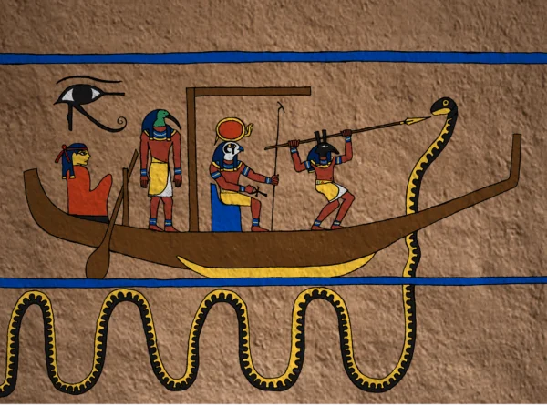
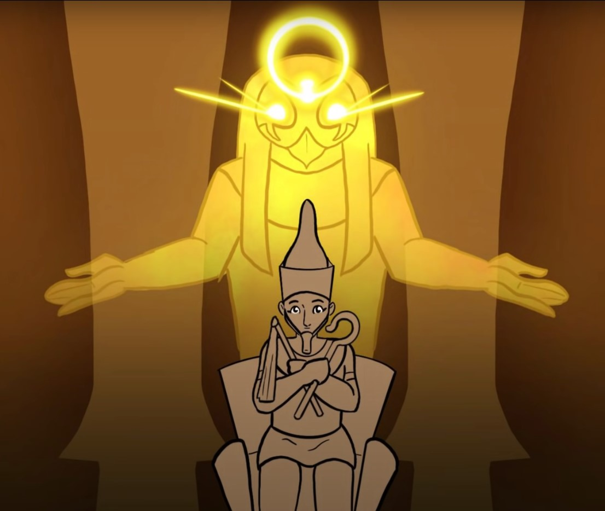
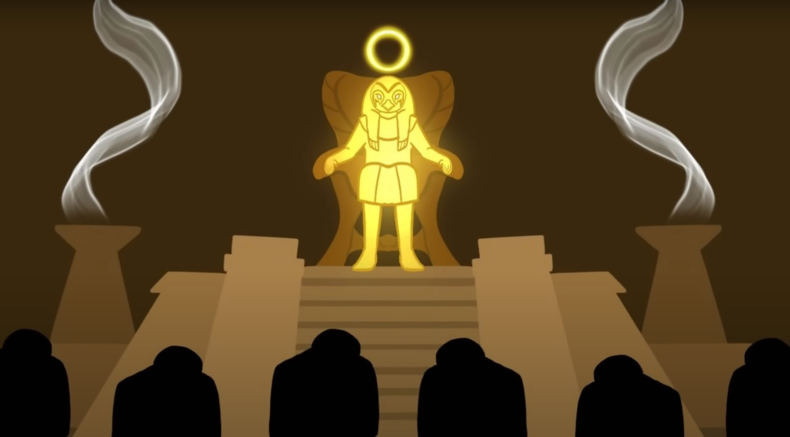
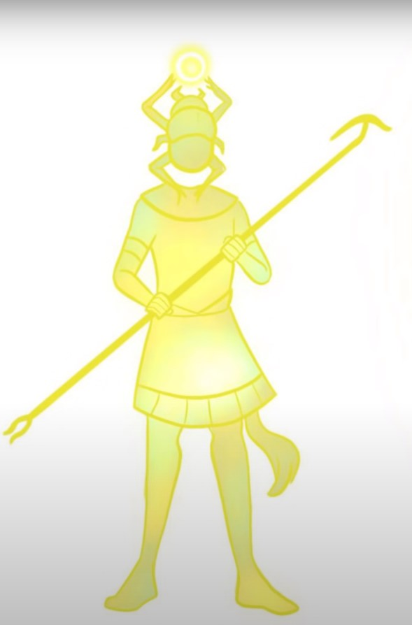
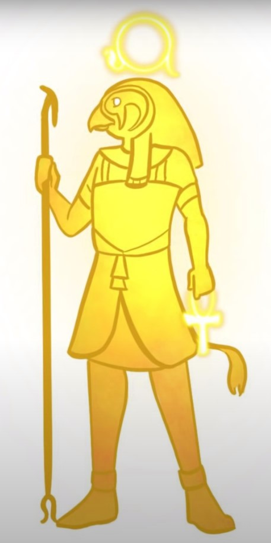
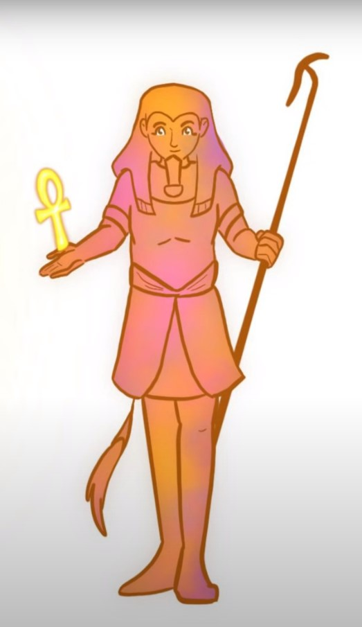
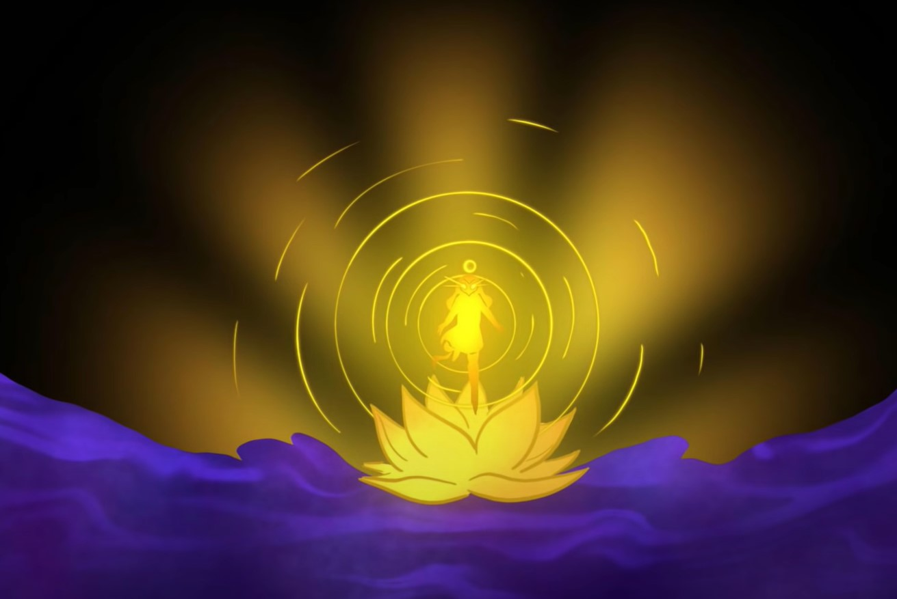
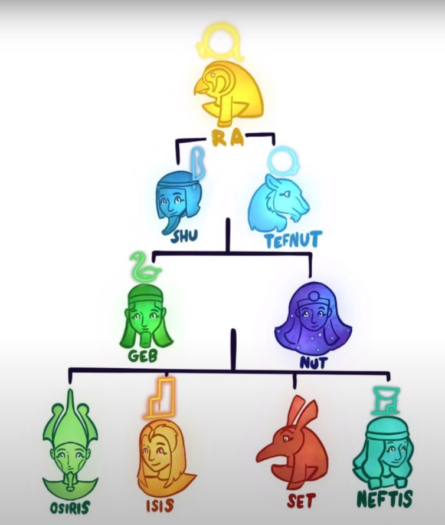

Ra era conocido como el dios del Sol y la Creación, siendo la cabeza principal del
panteón egipcio y uno de los dioses más venerados por esta civilización.
Representación de Ra
Ra es a menudo representado como un hombre con cabeza de halcón, demostrando su conexión con el cielo y la altura.
Los antiguos egipcios creían que Ra viajaba por el cielo durante el día y descendía al inframundo por la noche,
simbolizando el ciclo diario del sol.
En ese viaje por el Inframundo, el dios solar debía enfrentar a la serpiente Apofis, representando el mal.
El objetivo de Apofis era devorar a Ra, cubriendo el mundo de tinieblas y oscuridad.

Importancia en la mitología y cultura
Como dios creador, Ra desempeñaba un papel fundamental en la mitología egipcia, siendo responsable de la creación del mundo
y de la humanidad.
Su culto era ampliamente venerado, y los faraones a menudo se identificaban con Ra, reclamando su
descendencia divina y convirtiéndose en los "Hijos de Ra" durante su coronación.

Dentro del panteón, Ra era el dios más importante, gobernando tanto en el cielo como en la tierra. Su gobierno en la tierra
le generó problemas, haciendo que Ra envejeciera y que muchos le perdieran el respeto.

Las caras de Ra
Una característica común de este dios es su cambio de forma y nombre según la posición del sol.
Estas son las caras de Ra:
Khepri

Ra

Atum

Creación del mundo por Ra
Ra creó el mundo a partir de la nada. Se dice que surgió de una flor de loto en las aguas primordiales.
Luego formó la tierra, el cielo y todos los seres vivos. Su luz y energía vital dieron origen a
la vida en el universo.

Descendencia de Ra
La descendencia de Ra es conocida como la Eneada más famosa de la mitología egipcia,
incluyendo dioses importantes como Isis,
Osiris, Seth y Neftis.
